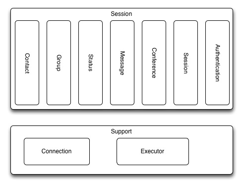

This library is a replacement for Yahoo Instant Messenger version
9.0.0.2162.
Overview
Reasons for rewrite
Single Threaded. Before there were 2 threads. Thread-safe. All changes
are on the single thread. Interfaces to protect internals. Easier to
provide multiple implementation. Easier for testing. More modular.
Easier to make changes. Easier to test. Better tolerance for login
failures. Consistent use of version 9 protocol.
Current Limitations
Multiple Identities are not supported. Connecting via HTTP is not
supported.
Developer Info

Version of Yahoo Instant Messenger
Make sure that the protocol that is used is from version 9.0.0.2162.
Many versions of Yahoo have a slightly different protocol. There may be
issues with using some old and some new protocols. This project should
be designed to support multiple protocols, but that is not yet done.